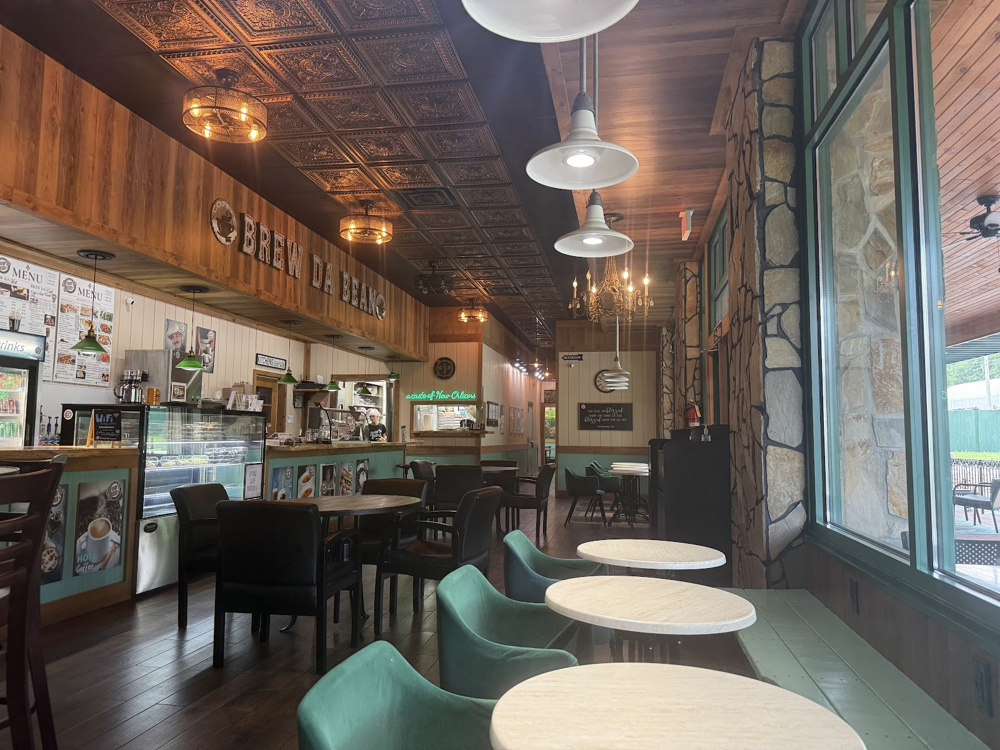

Our story
A slice of New Orleans,
in the heart of the NRV.
Brew Da Bean is more than a coffee shop. It is a slice of New Orleans in Christiansburg, Virginia, founded by a food enthusiast who fell in love with the vibrant culture of the Big Easy.
Our passion blends the rich, bold flavors of coffee with the soulful essence of Cajun cuisine. One cup and one dish at a time, we celebrate the fusion of two beloved traditions.
“Tucked away behind the main road, but definitely worth the trip.”A regular, on Google
